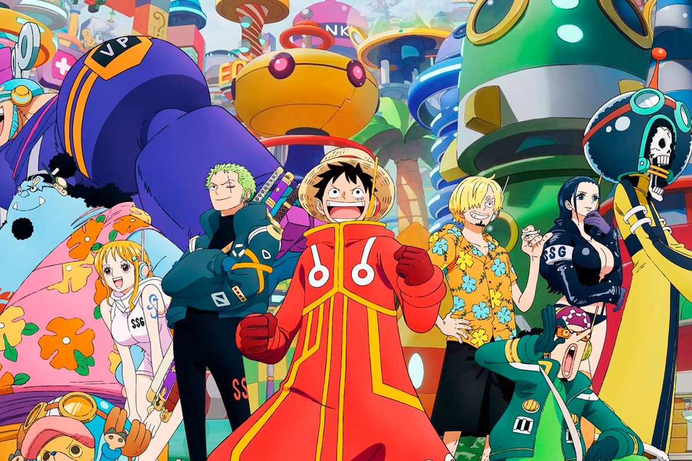

Sobre oque é?
One Piece é um anime (e manga) de aventura, ação e fantasia que conta a história de Monkey D. Luffy, um jovem que sonha em tornar-se o Rei dos Piratas. Desde pequeno, Luffy foi inspirado por piratas lendários e ganhou poderes especiais depois de comer uma Fruta do Diabo, especificamente a Gomu Gomu no Mi, que lhe deu um corpo elástico como borracha.
A série acompanha a jornada de Luffy e da sua tripulação, os Piratas do Chapéu de Palha, enquanto navegam pelos mares do mundo fictício de One Piece em busca do lendário tesouro chamado "One Piece", deixado pelo antigo Rei dos Piratas, Gol D. Roger. Ao longo da viagem, enfrentam inimigos poderosos, descobrem mistérios do mundo e formam laços fortes de amizade.
anime mistura humor, drama, batalhas épicas e temas como liberdade, justiça e perseverança, o que o torna tão cativante para fãs de todas as idades.
Frutas do Diabo
As Frutas do Diabo (Akuma no Mi, em japonês) são objetos mágicos superimportantes no mundo de One Piece. Quando alguém come uma dessas frutas, ganha poderes especiais únicos — mas com um preço: nunca mais poderá nadar. E como a maioria do mundo de One Piece é feito de ilhas e mares… isso é uma fraqueza bem séria para piratas!
Cada fruta é única — ou seja, só existe uma de cada tipo no mundo em determinado momento. E há muito mistério ainda por desvendar sobre a origem delas!
Piratas
No universo de One Piece, os piratas são os protagonistas da história — mas, ao contrário do que vemos em histórias tradicionais, aqui eles são extremamente variados: alguns são heróis, outros vilões terríveis, e muitos estão algures no meio.
Os piratas em One Piece navegam os mares em busca de fama, tesouros e aventuras. Muitos têm como objetivo principal encontrar o lendário tesouro "One Piece", deixado por Gol D. Roger, o antigo Rei dos Piratas. Quem o encontrar, teoricamente, ganha o título de Rei dos Piratas — um símbolo de liberdade absoluta.
Marinha
É basicamente o braço militar do Governo Mundial. São eles que tentam manter a ordem e combater os piratas pelo mundo fora — embora, como vais ver, nem tudo é preto no branco.
A Marinha (ou Kaigun, no original) é uma força global com bases espalhadas por todos os mares. O seu principal objetivo é fazer cumprir a lei e proteger os cidadãos contra piratas, revolucionários e outras ameaças. No entanto, nem todos os marinheiros são "heróis" no sentido tradicional...
Objetivo
O objetivo central do anime One Piece é acompanhar a jornada de Monkey D. Luffy, um jovem pirata com o sonho de se tornar o Rei dos Piratas. Para isso, ele precisa encontrar o lendário tesouro conhecido como "One Piece", deixado por Gol D. Roger, o antigo Rei dos Piratas.
Ao longo da sua aventura pelos mares, Luffy forma uma tripulação, enfrenta inimigos poderosos, descobre segredos do mundo e fortalece os laços de amizade com os seus companheiros. O anime transmite mensagens fortes sobre liberdade, sonhos, lealdade e superação.
Apesar de ter muitos momentos de humor e ação, One Piece também trata de temas sérios como injustiça, racismo, guerra, e corrupção, tornando a história profunda e envolvente para todas as idades.